Bounded synthetic backend proof. Full SurfViewJS C05/C06/C09 parity remains unqualified. Scope and checks · Source binding
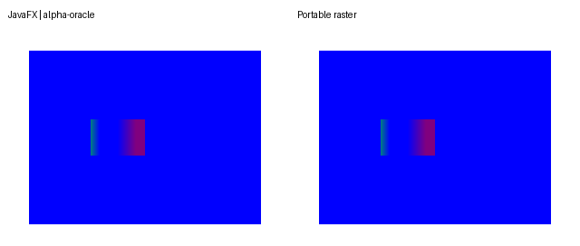
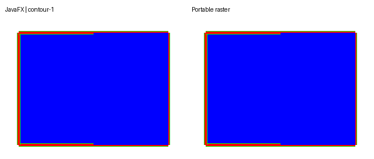
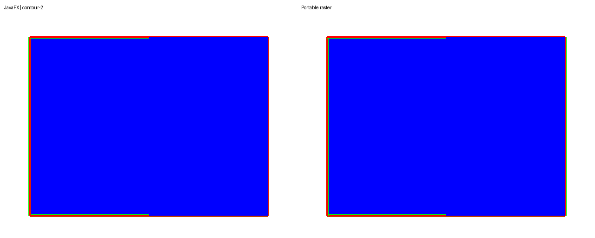
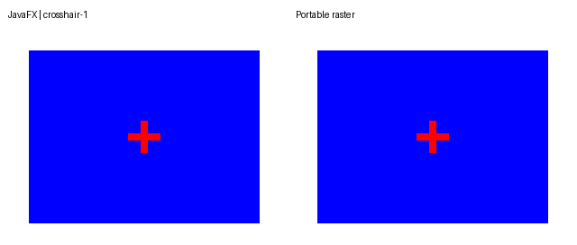
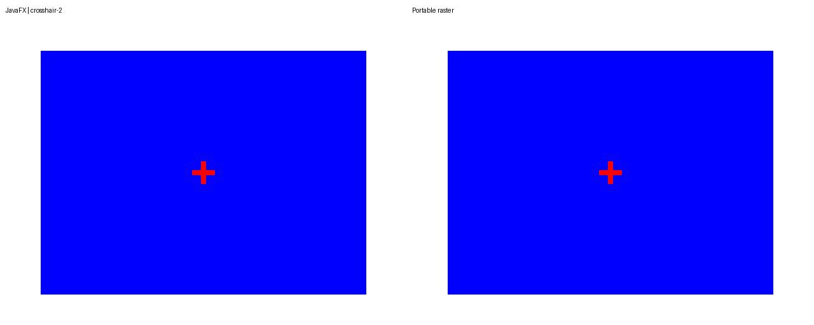
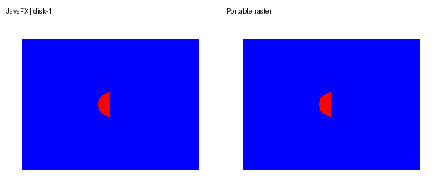
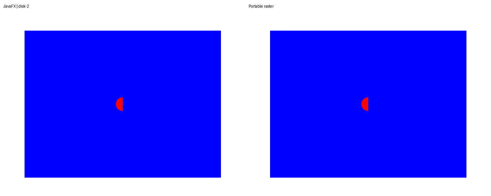
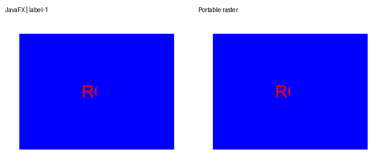
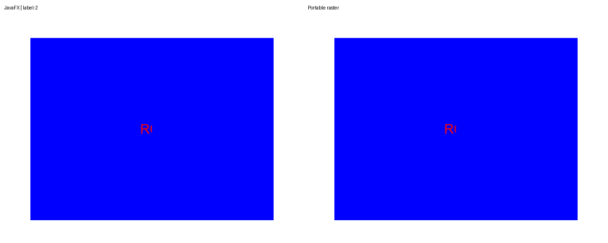
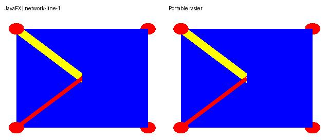
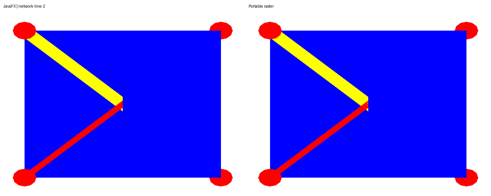
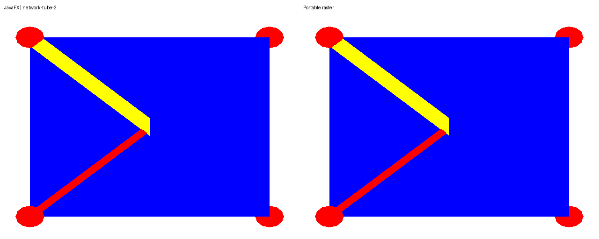
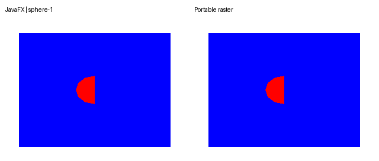
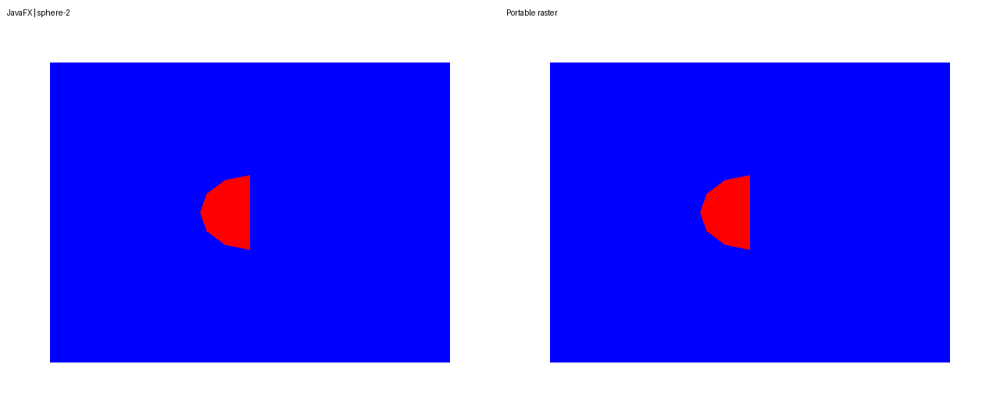
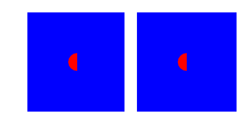
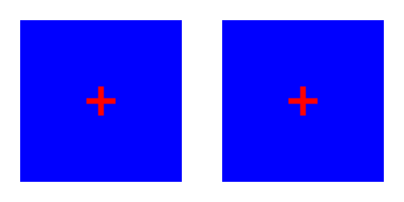
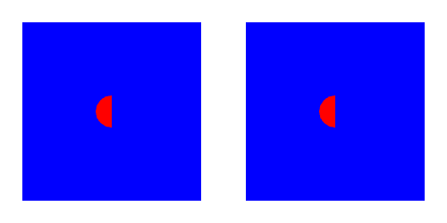
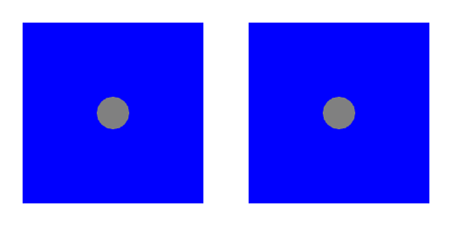

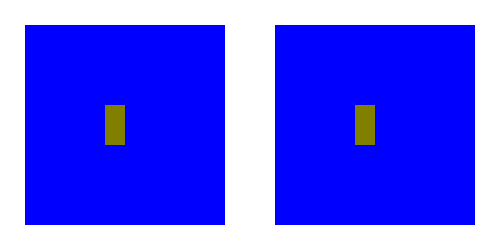
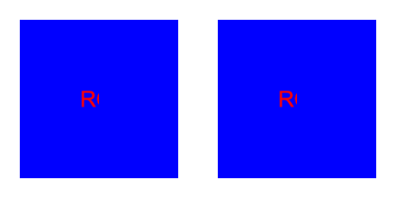
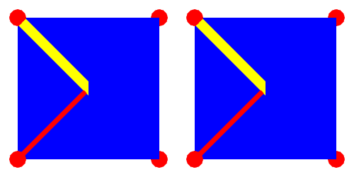
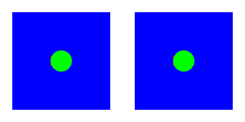
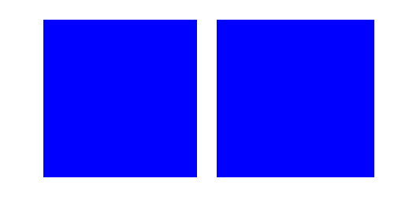
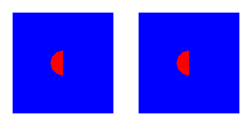
JavaFX metrics · Browser checks · Retained adverse overlap result